Omnia Feed - Business Profile Settings¶
Important Note! Omnia Feed is “Forward Only” meaning that a page that has been sent to a user can’t be recalled. This is important to remember for example when creating or editing a query.
Note! Omnia Feed is not available for Omnia on-prem due to push notifications.
Settings¶
The following settings are available for Omnia Feed, for the Business Profile:
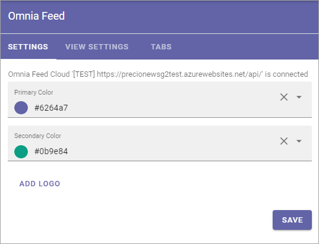Settings¶
Here you can edit colors and add a logo. When you click ADD LOGO the Media Picker starts. For more information about how to use it see: Media Picker
When any settings for tabs are done, users that already are using the app will be prompted to restart the app. After restart, users will see the changes.
View Settings¶
Use this tab for settings for Omnia Feed’s views.
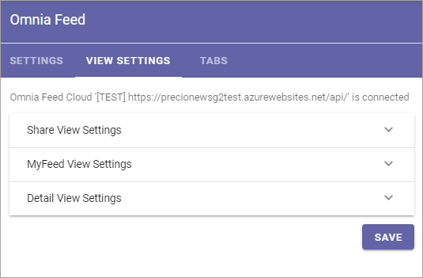What you do here is to select properties in Omnia that contain the information needed for the different views.
Note that properties must have been set up in Omnia Admin to be available to select here, see: Properties
Share View Settings:
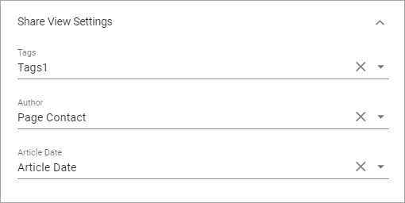MyFeed View Settings:
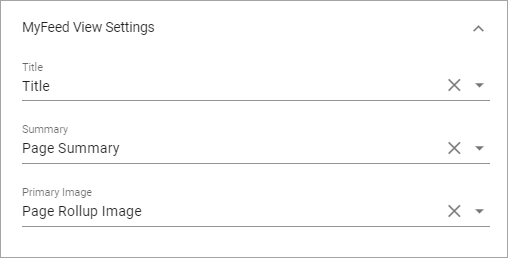Detail View Settings:
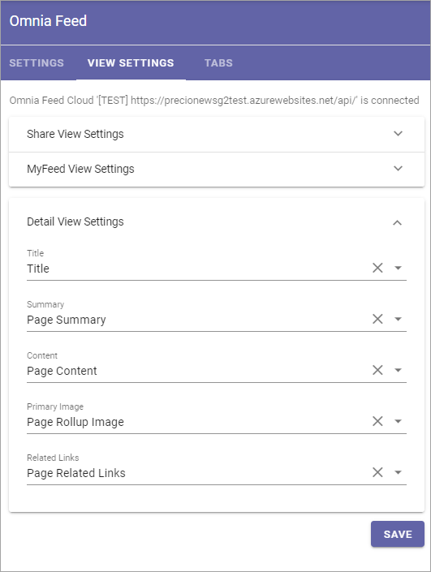Tabs¶
Here you can set up and edit available tabs in the Omnia Feed app, for this Business Profile.
Each tab can display a Page Rollup from Omnia, an Embedded Link or an External Link. Here’s an example:
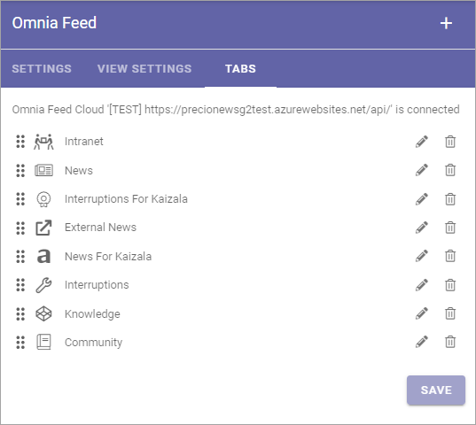Click the pen to edit or the dust bin to remove. You can edit all settings the same way as when creating a new tab, except Type. See below for more information about the settings.
You can set the order that the tabs are shown, from left to right, by using drag and drop on the title.
Add a new tab¶
To add a new tab, click the plus.
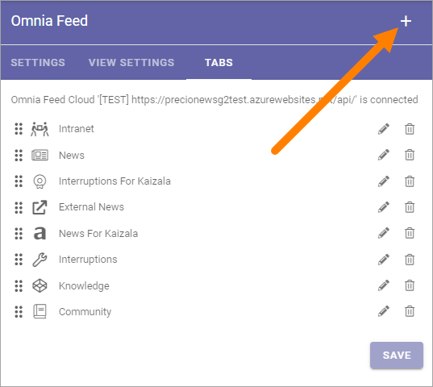And use these settings:
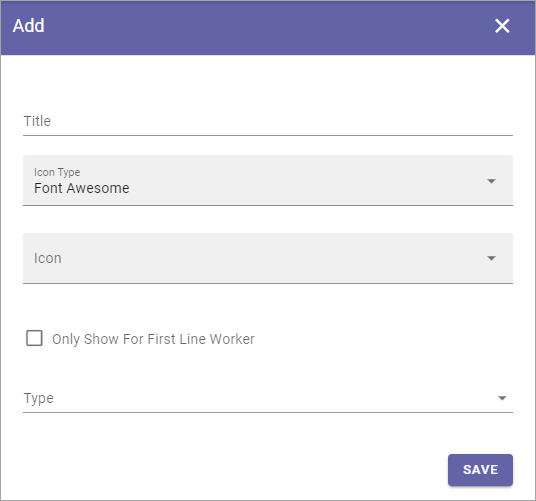Title: Add a title for the tab.
Icon Type: If you want an icon for the tab, select icon type here.
Icon: Choose icon from the selected type here. If you leave this field empty, no icon is shown.
Only Show For First Line Worker: If this tab should be shown for Kaizala users only, select this option.
Type: Select Type of tab here; Query (=Page Rollup), Link or Embedded Link. For more information, see below.
For Types Link or Embedded Link here:
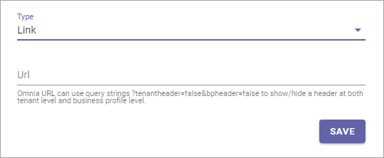Link tabs can for example be used as a shortcut to other applications (time report, HR system, etc). Embedded Link is most often used to show the home page of an Omnia intranet, but it can also be used to show some specific Omnia functionality that is not actually a part of Omnia Feed. Two examples are displaying the My Links list or the My Tasks list. If used for that purpose, just rememeber that this is just a link. Omnia notifications (for tasks, documents or more) can not be displayed in Omnia Feed.
For Query you can set the following:
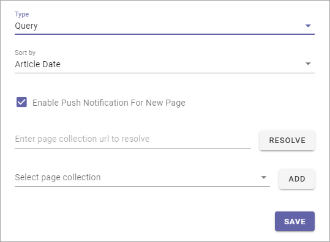Sort By: You can sort the list of pages by “Last Activity” or “Article Date”. Last Activity means a new version of the page being published, or when a comment is added. Regarding Article Data it depends on the property defined for this - set up for the Share View under View Settings. See above. Also note that sorting is always descending (latest at the top).
Enable Push Notification For New Page: Select this option if users should recieve a Push Notificatipon when a new page has been added to the page collection(s) set up.
Enter page collection url and resolve: Type or paste the page collection url and click the button.
Select page collection: If you entered a correct url in the field above, the name of the Page Collection is shown here and you can click ADD to use it.
If needed, you can add additional Page Collections the same way.
Additional settings for Page Collections¶
By expanding the Page Collection you can set the following:
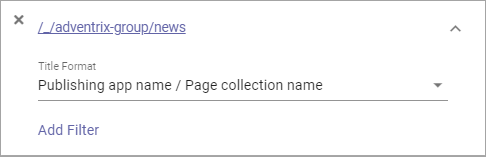Title Format: There’s a number of predefined title formats you can choose, and there’s also a custom option where you can type any text as the title.
Add Filter: Use this option for additional filtering, to just display some of the pages in the Page Collection. You select one or more properties and can then set up further details for that property.
Here’s a simple example where only the pages tagged with North Europe for Market Region, should be displayed in the rollup:
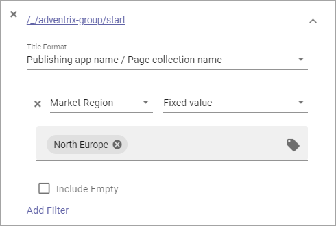Omnia Feed and permissions¶
To be able to access a page - news or any other Omnia page - users will need read permission for that page, meaning permissions in Omnia apply. This is normally set on Page Collection level. Omnia Feed has no separate permissions settings. Therefore, users can only see feed notifications for and read the pages they are allowed to read as set in Omnia.
Resetting the app¶
If it, for any reason, should be needed to reset the app - for example if an important query is edited, it is simply done by the user logging out and logging in again.
Intune users¶
Important information when setting up the tenant: If the customer is using Intune/conditional access that requires device authentication, the AM editor must be informed so the necessary settings for this will be done. Also note that when this is the case, Omnia Feed for Android will require access to the Contacts list on the device.